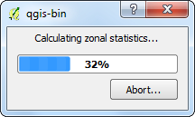
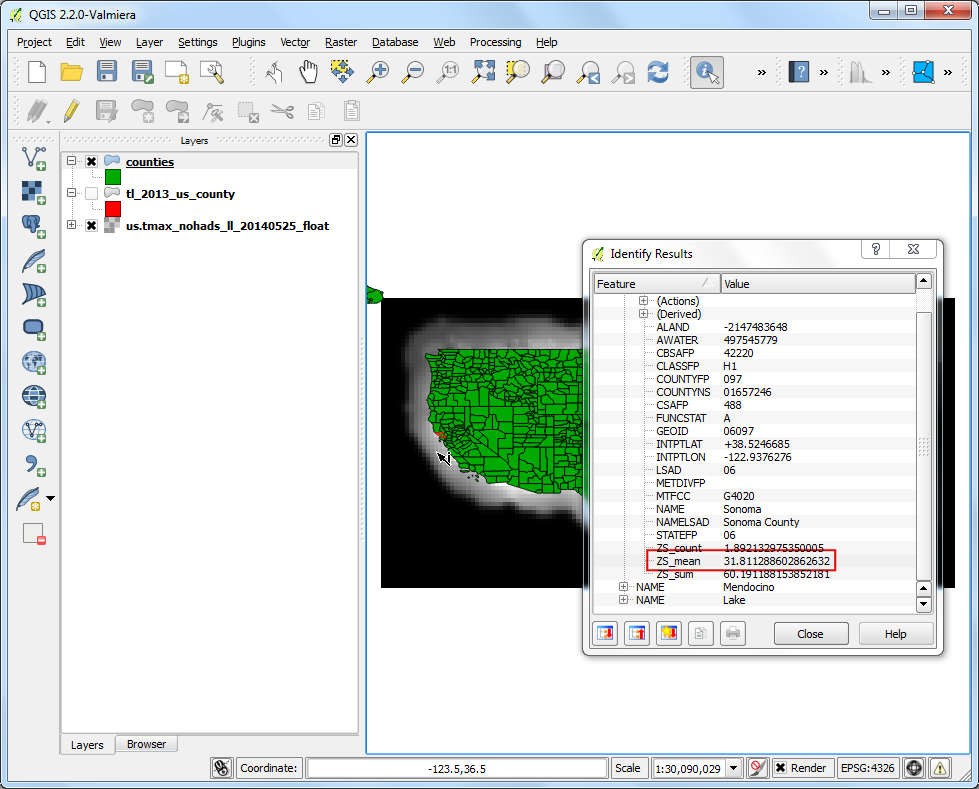
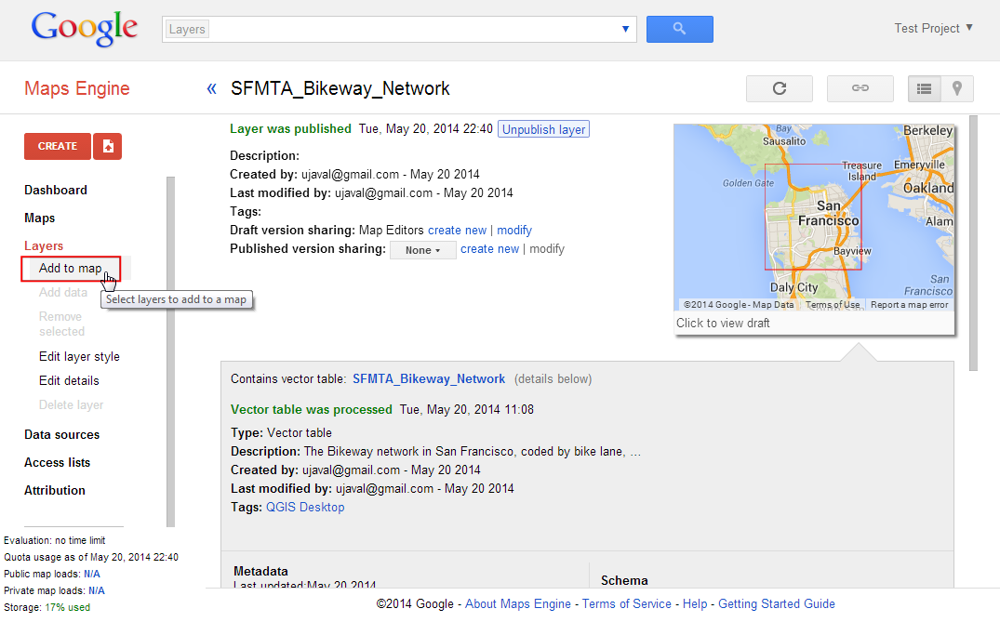

Αυτοματοποίηση Σύνθετων Ροών με την χρήση επεξεργασίας προσπέλασης.
[ Download PDF
A4
Letter ]
Η ροές GIS τυπικά περιλαμβάνουν πολλά βήματα - με κάθε βήμα να δημιουργεί ένα εξαγόμενο αρχείο το οποίο χρησιμοποιείται από το επόμενο βήμα. Αν αλλάξετε τα εισαγόμενα δεδομένα ή αν θέλετε να μετατρέψετε ελαφτώς μια παράμετρο, θα πρέπει να τρέξετε την διαδικασία από την αρχή χειροκίνητα. Ευτυχώς, το QGIS έχει ένα ενσωματωμένο γραφικό περιβάλλον το οποίο μπορεί να σας βοηθήσει να ορίσετε την ροή και να την τρέξετε καλόντας την μόνο μία φορά. Μπορείτε επίσης να τρέξετε της ροές ως σύνολο σε ένα μεγάλο αριρμό εισόδων.
Επισκόπηση του έργου
Αυτή η άσκηση σας δείχνει πως να δημιουργήσετε ένα μοντέλο για να εξάγετε περιοχές για μια συγκεκριμένη κατηγορία από ένα κατηγοριοποιημένο ψηφιδωτό αρχείο χρήσεων γης.
Διαδικασία
Η ροή για αυτή την εργασία θα ακολουθεί τα παρακάτω βήματα.
Εφαρμόστε έναν αλγόριθμο Majority Filter στο εισαγόμενο ψηφιδωτό αρχείο κάλυψης γης. Αυτό θα μειώσει τον θόρυβο στο εξαγόμενο αρχείο με το να εξαλείφει τα μεμονομένα εικονοστοιχεία.
Μετατρέψτε το αποτέλεσμα του ψηφιδωτού σε ένα πολυγωνο,
Κάντε μια ερώτηση για μια τιμή της κατηγορίας από τα χαρακτηριστικά του πίνακα από το πολύγωνο και δημιουργήστε ένα διανυσματικό στρώμα για αυτή την κατηγορία.
Τα βήματα που ακολουθούν παρουσιάζουν την διαδικασία του κώδικα της παραπάνω διαδικασίας σε ένα μοντέλο και το τρέχουν στα κατεβασμένα δεδομένα.
Τρέξτε το QGIS και πηγαίνετε στο .

Το παράθυρο διαλόγου Processing modeler περιέχει ένα παράθυρο στα αριστερά της οθόνης και έναν κύριο καμβά. Επιλέξτε την καρτέλα Inputs στην αριστερή πλευρά της οθόνης και σύρετέ το + Raster layer στον καμβά.

Ένα παράθυρο διαλόγου Parameter definition θα ανοίξε. Εισάγετε το Input ως Parameter name και επιλέξτε Yes στο Required. Κάντε κλικ OK.

Θα δείτε ένα κουτί με το όνομα Input να εμφανίζεται στον καμβά. Αυτό εκπροσωπεί το ψηφιδωτό της εδαφοκάλυψης το οποίο θα χρησιμοποιήσουμε σαν είσοδο. Το επόμενο βήμα είναι να εφαρμόσετε έναν αλγόριθμο Majority filter. Αλλάξτε στην καρτέλα Algorithm από την κάτω αριστερή γωνία. Ψάξτε για τον αλγόριθμο και θα δείτε οτι εμφανίζεται κάτω από την καρτέλα SAGA. Σύρετέ το στον κάμβά.
Note
If you do not see this algorithm or any of the subsequent algorithms
mentioned in thi tutorial, you may be using the Simplified
Interface of the Processing Toolbox. Switch to the Advanced
Interface by using the dropdown at the bottom of the Processing
Toolbox in the main QGIS window.

Ενα παράθυρο διαμόρφωσης για το Majority Filter θα εμφανιστεί. Αφήστε τις προεπιλεγμένες τιμές και πατήστε OK.

Θα παρατηρήσετε οτι τώρα υπάρχει ένα νέο κουτί με την ονομασία Majority Filter στον καμβά και οτι είναι συνδεδεμένο με το κουτί Input. Αυτό συμβαίνει γιατί ο αλγόριθμος Majority Filter χρησιμοποιεί το ψηφιδωτό αρχείο Input σαν είσοδο. Το επόμενο βήμα στην διαδικασία είναι να μετατρέψετε το παράγωγο του φίλτρου πλειοψηφίας σε διανυσματικό αρχείο. Βρείτε τον αλγόριθμο Polygonize (raster to vector) και σύρετέ το στον καμβά.
Note
Τα κουτιά μπορούν να μετακινηθούν και να στοιβαχθούν με το να τα επιλέγετε και να τα σύρετε κρατώντας πατημένο το αριστερό πλήκτρο του ποντικιού. Μπορείτε επίσης να χρησιμοποιήσετε την ροδέλα για να μεγενθύνετε ή να σμίκρυνετε τα στοιχεία στον καμβά.

Επιλέξτε το ‘Filtered Grid’ από τον αλγόριθμο ‘Majority Filter’ ως την τιμή για το Input layer. Πατήστε OK.

Το τελευταίο βήμα για την διαδικασία είναι να κάνετε μια ερώτηση για την τιμή της κατηγορίας και να δημιουργήσετε ένα καινούριο στρώμα με τα χαρακτηριστικά που ταιριάζουν στην ερώτηση. Ψάξτε τον αλγόριθμο Extract by attribute και σύρετέ τον στον καμβά.

Επιλέξτε “Διανυσματοποίηση’ από τον αλγόριθμο ‘Polygonize (raster to vector) ως το Input Layer. Θέλουμε να εξάγουμε τα εικονοστοιχεία που απεικονίζουν καλλιεργήσιμες εκτάσεις. Η τιμή των εικονοστοιχείων που αντιστοιχεί σε αυτή την κατηγορία είναι 12. (βλέπε Τιμές κωδικών). Εισάγετε το DN ως το Selection attribute και το 12 ως την value. Δεδομένου οτι το εξαγόμενο από αυτή την διαδικασία θα είναι και το τελικό αποτέλεσμα, θα πρέπει να το ονομάσουμε. Εισάγετε το vectorized class ως το Output.

Εισάγετε την Model name ως vectorize και Group name`ως ``raster`. Κάντε κλικ στο Save button.

Ονομάστε το μοντέλο``vectorize`` και πατήστε Save.

Τώρα είναι η ώρα να ελέγξουμε το μοντέλο μας. Κλείστε τον σχεδιαστή και πηγαίνετε στο κύριο παράθυρο του QGIS. Πηγαίνετε στο .

Μεταφερθείτε στο κατεβασμένο αρχείο LC_hd_global_2001.tif.gz και πατήστε Άνοιγμα. Μόλις το ψηφιδωτό φορτωθεί, πηγαίνετε στο .

Βρείτε το πρόσφατα δημιουργημένο μοντέλο κάτω από το . Κάντε διπλό-κλικ για να το φορτώσετε.

Επιλέξτε το LC_hd_global_2001 ως το Input και πατήστε Run.

Θα δείτε οτι όλα τα βήματα έχουν ολοκληρωθεί χωρίς να έχει γίνει κάποια είσοδος από τον χρήστη. Μόλις η διαδικασία τελειώσει, ένα νέο στρώμα με τίτλο vectorized_class θα προστεθεί στο QGIS. Ας βελτιστοποιήσουμε λίγο το μοντέλο. Κάντε δεξί-κλικ στο μοντέλο vectorize και επιλέξτε το Επεξεργασία μοντέλου.

Στο βήμα 12, έχουμε κωδικοποιήσει την τιμή “12” ως την τιμή της κατηγορίας χωρίς να επιτρέπεται η αλλαγή της. Αντί για αυτό, μπορούμε να την ορίσουμε ως μια παράμετρο εισόδου την οποία ο χρήστης θα μπορεί να αλλάζει. Για να το προσθέσουμε αυτό, πηγαίνετε στην καρτέλα Inputs και σύρετε το + String στο μοντέλο.

Εισάγετε το Parameter Name ως Class. Εισάγετε 12 ως την Default value.

Τώρα θα αλλάξουμε τον αλγόριθμο Extract by attribute για να χρησιμοποιήσουμε αυτή την είσοδο αντί για μια τιμή η οποία δεν μεταβάλλεται. Κάντε κλικ στο κουμπί Edit δίπλα από το κουτί Extract by attribute.

Κάντε κλικ στο μενού Value και επιλέξτε Class. Κάντε κλικ στο OK.

Θα δείτε από το διάγραμμα του μοντέλου οτι ο αλγόριθμος Extract by attribute τώρα χρησιμοποιεί 2 εισόδους. Ο σχεδιαστής έχει μια συντόμευση για να ξεκινάει το μοντέλο και να το εξετάζει. Πατήστε στο κουμπί Run από την εργαλειοθήκη.

Θα παρατηρήσετε οτι το παράθυρο διαλόγου του μοντέλου τώρα έχει ένα επεξεργάσιμο πεδίο που ονομάζεται Class. Εισάγετε την τιμή 16` ως την τιμή Class και πατήστε Run.

Μόλις η διαδικασία τελειώσει, θα δείτε οτι μόλις με ένα κλικ είμασταν σε θέση να τρέξουμε μια σύνθετη διαδικασία και να εξάγουμε την έκταση που σχετίζεται με την ομάδα με κωδικό 16.

Τώρα που το μοντέλο μας είναι έτοιμο, μπορούμε να το τρέξουμε το ίδιο εύκολα για ένα νέο ψηφιδωτό αρχείο. Φορτώστε το αρχείο LC_hd_global_2012.tif.gz πηγαίνωντας στο . Κάντε κλικ στο μοντέλο vectorize``από τον πίνακα :guilabel:`Processing Toolbox.

Επιλέξτε το στρώμα LC_hd_global_2012 ως το Input και πατήστε Run.

Μόλις νέο αποτέλεσμα φορτωθεί, μπορείτε να συγκρίνετε τις αλλαγές στις καλλιεργήσιμες εκτάσεις μεταξύ του 2001 και του 2012.

Είναι πάντα καλή ιδέα να προσθέσετε τεκμηρίωση στο μοντέλο σας. Ο σχεδιαστής έχει ένα ενσωματωμένο Help editor το οποίο σας επιτρέπει να να εισάγετε βοήθεια απευθείας μέσα στο μοντέλο. Κάντε δεξί κλικ στο μοντέλο vectorize και επιλέξτε Edit model.

Κάντε κλικ στο κουμπί Edit model help από την εργαλειοθήκη.

Στο παράθυρο διαλόγου Help editor, επιλέξτε οποιοδήποτε αντικείμενο από τον πίνακα Select element to edit και εισάγετο κείμενο βοήθειας Element description. Πατήστε OK. Αυτή η βοήθεια θα είναι διαθέσιμη στην καρτέλα Help όταν ξεκινάτε το μοντέλο.

Τα μοντέλα μπορούν να σώσουν πολύ χρόνο και να σας επιτρέψουν να γράχετε τις δικές σας διαδικασίες μια φορά και να τις τρέξετε πολλές φορές. Μπορείτε ακόμα να μοιραστείτε τα μοντέλα σας με άλλους χρήστες. Τα αρχεία των μοντέλων είναι αποθήκευμένα στο αποθετήριο .qgis2. Μπορείτε να στείλετε το αρχείο .model σε έναν άλλον χρήστη ο οποίος μπορεί να το αντιγράψει στον κατάλληλο φάκελο στον υπολογιστή του και αυτό θα εμφανιστεί στο Processing toolbox. Η τοποθεσία των φακέλων των μοντέλων θα εξαρτηθεί από την πλατφόρμα που χρησιμοποιεί ο χρήστης όπως φαίνεται παρακάτω : (Αντικαταστείστε το username με το δικό σας)
Windows
c:\Users\username\.qgis2\processing\models\
Mac
/Users/username/.qgis2/processing/models/
Linux
/home/username/.qgis2/processing/models/